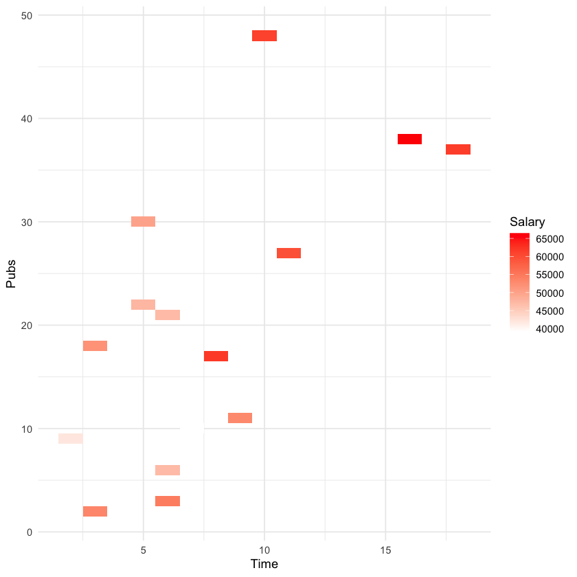
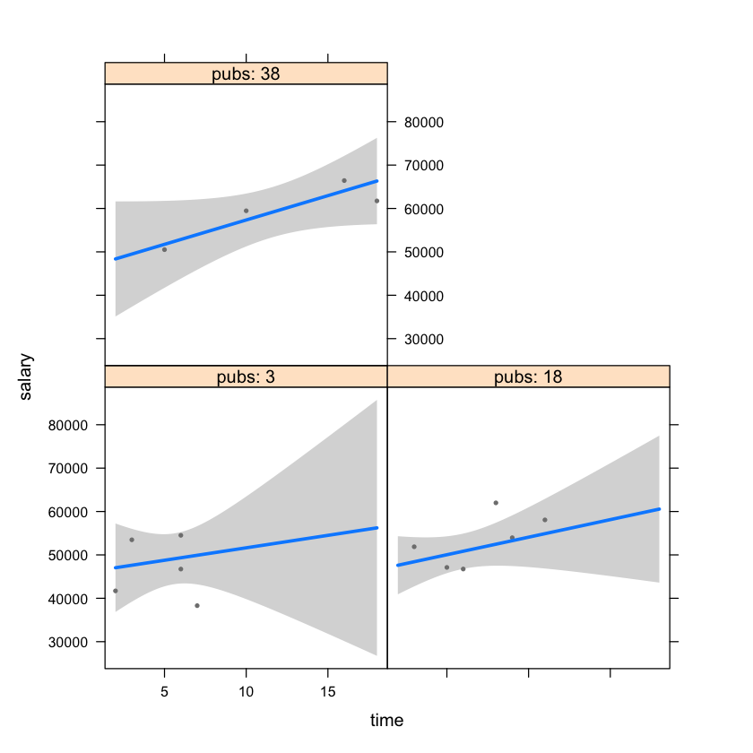
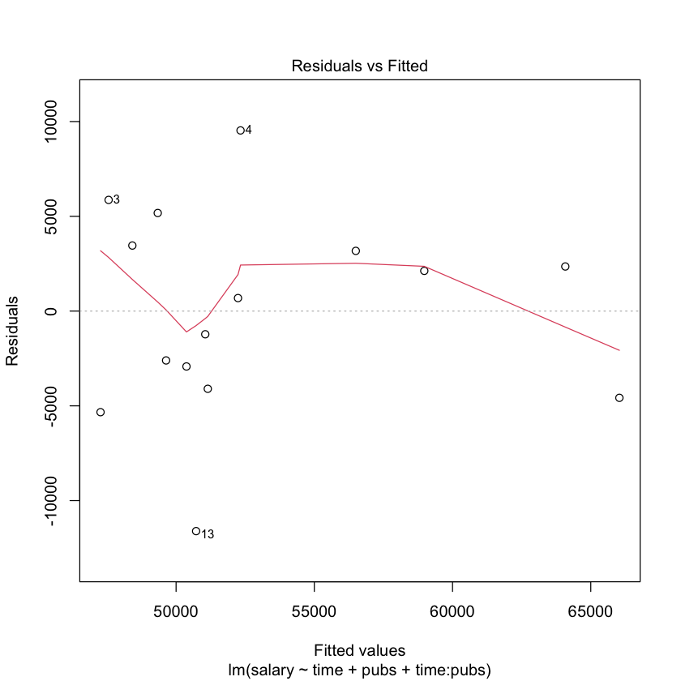
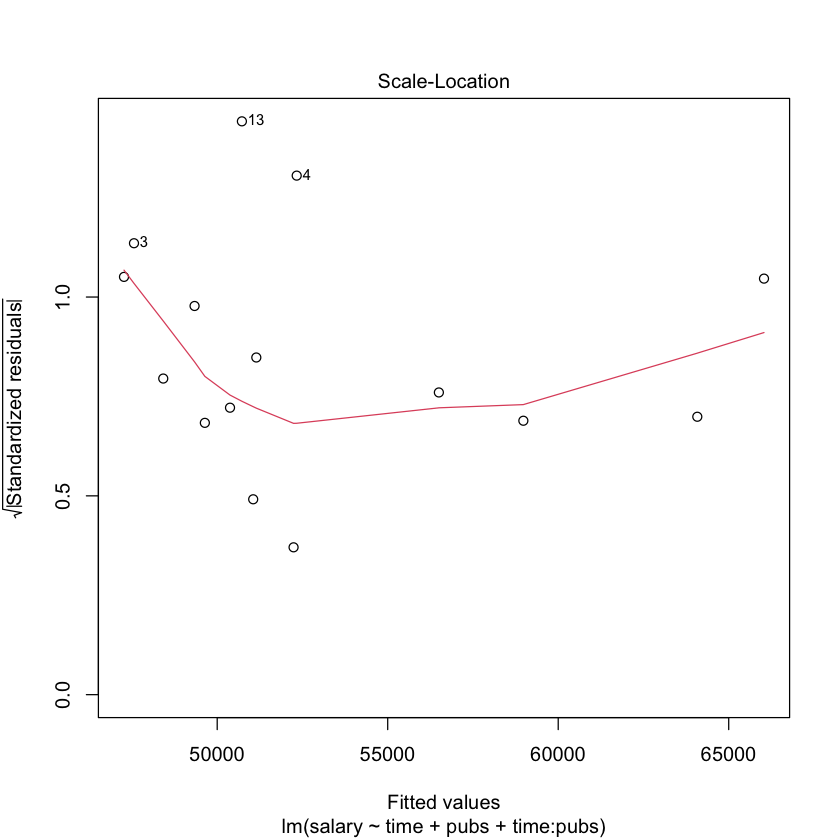
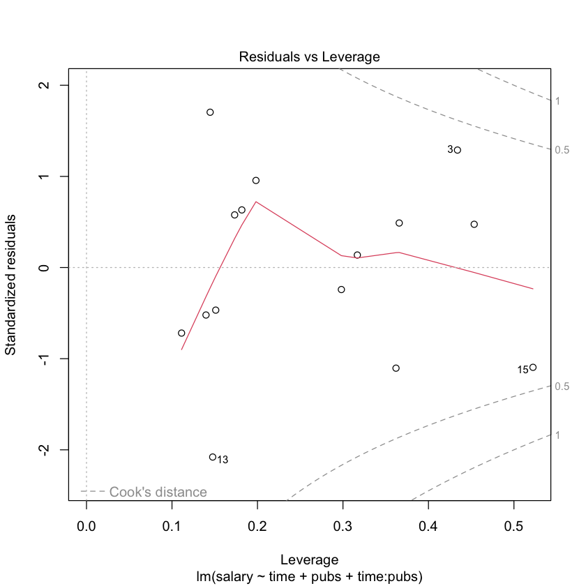
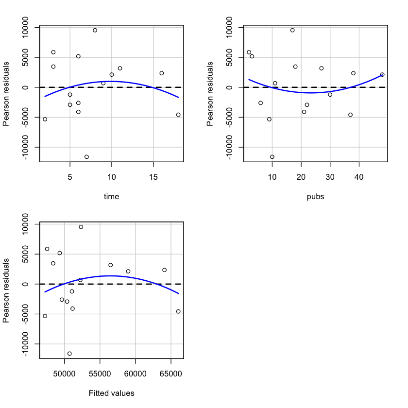
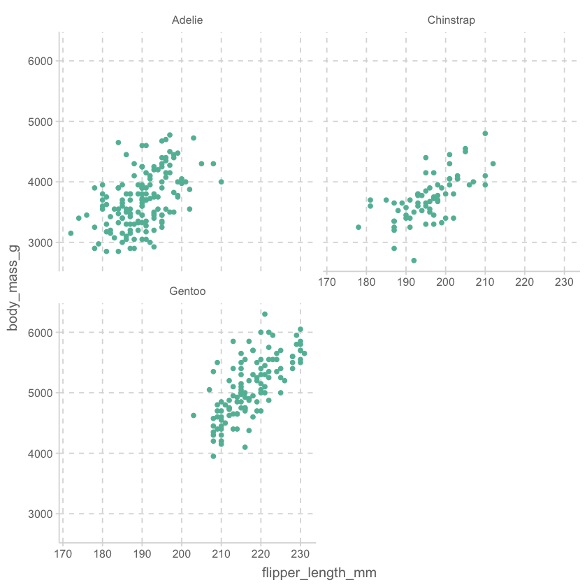

acad0 <- read_csv("data/c0301dt.csv")Statistical Inference
Applied Multiple Regression/Correlation Analysis for the Behavioral by Jacob Cohen, Patricia Cohen, Stephen G. West, Leona S. AikenSciences
acad0| time | pubs | salary |
|---|---|---|
| <dbl> | <dbl> | <dbl> |
| 3 | 18 | 51876 |
| 6 | 3 | 54511 |
| 3 | 2 | 53425 |
| 8 | 17 | 61863 |
| ⋮ | ⋮ | ⋮ |
| 6 | 21 | 47047 |
| 7 | 10 | 39115 |
| 11 | 27 | 59677 |
| 18 | 37 | 61458 |
# create a linear model with time as the predictor time, and the outcome being the salary
# the model is called mod1
mod1 <- lm(salary ~ time, data = acad0)
# print the model
mod1
# print the model summary
summary(mod1)
Call:
lm(formula = salary ~ time, data = acad0)
Coefficients:
(Intercept) time
43659 1224
Call:
lm(formula = salary ~ time, data = acad0)
Residuals:
Min 1Q Median 3Q Max
-13114.3 -3964.4 51.4 4025.1 8409.3
Coefficients:
Estimate Std. Error t value Pr(>|t|)
(Intercept) 43658.6 2978.0 14.660 1.83e-09 ***
time 1224.4 336.5 3.639 0.003 **
---
Signif. codes: 0 ‘***’ 0.001 ‘**’ 0.01 ‘*’ 0.05 ‘.’ 0.1 ‘ ’ 1
Residual standard error: 5763 on 13 degrees of freedom
Multiple R-squared: 0.5046, Adjusted R-squared: 0.4665
F-statistic: 13.24 on 1 and 13 DF, p-value: 0.003# r squared of mod1 and round to 2 decimal places
round(summary(mod1)$r.squared, 2)
0.5
# correlation between all variables in acad0 with corr.test
# corr.test is a function from the psych package
library(psych)
corr.test(acad0)Call:corr.test(x = acad0)
Correlation matrix
time pubs salary
time 1.00 0.66 0.71
pubs 0.66 1.00 0.59
salary 0.71 0.59 1.00
Sample Size
[1] 15
Probability values (Entries above the diagonal are adjusted for multiple tests.)
time pubs salary
time 0.00 0.02 0.01
pubs 0.01 0.00 0.02
salary 0.00 0.02 0.00
To see confidence intervals of the correlations, print with the short=FALSE option# buile a linear model with time an pubs as the predictor and salary as the outcome with interaction terms between time and pubs
mod2 <- lm(salary ~ time + pubs + time:pubs, data = acad0)
# visualize the interaction between time and pubs
ggplot(acad0, aes(x = time, y = pubs, fill = salary)) +
geom_tile() +
scale_fill_gradient(low = "white", high = "red") +
labs(x = "Time", y = "Pubs", fill = "Salary") +
theme_minimal()
# visualize the interaction between time and pubs with a package visreg
library(visreg)
visreg(mod2, "time", "pubs")
# visualize the interaction between time and pubs with a package car using effects function
library(car)
effects(mod2, "time", "pubs")
ERROR: Error in if (set.sign) {: argument is not interpretable as logical
Error in if (set.sign) {: argument is not interpretable as logical
Traceback:
1. effects(mod2, "time", "pubs")
2. effects.lm(mod2, "time", "pubs")
# regression diagnostics for mod2
library(car)
# plot the residuals against the fitted values
plot(mod2)
# plot the residuals against the fitted values with a package car
library(car)
residualPlots(mod2)


Test stat Pr(>|Test stat|)
time -0.9563 0.3615
pubs 0.6334 0.5407
Tukey test -1.1784 0.2386
helping <- read_csv("data/altruism.csv")# summary of helping
summary(helping) id pho_1 pho_2 pho_3
Min. : 1.00 Min. : 0.00 Min. : 0.00 Min. : 0.00
1st Qu.: 30.75 1st Qu.: 60.50 1st Qu.: 62.50 1st Qu.: 50.00
Median : 60.50 Median : 76.00 Median : 77.00 Median : 66.50
Mean : 60.50 Mean : 70.89 Mean : 70.25 Mean : 61.58
3rd Qu.: 90.25 3rd Qu.: 94.50 3rd Qu.: 91.50 3rd Qu.: 84.25
Max. :120.00 Max. :100.00 Max. :100.00 Max. :100.00
NA's :1 NA's :1 NA's :2
sex age emp_q20 emp_q22
Min. :0.000 Min. : 203 Min. : 0.00 Min. : 6.00
1st Qu.:0.000 1st Qu.: 2003 1st Qu.: 62.50 1st Qu.: 65.25
Median :1.000 Median : 2003 Median : 80.00 Median : 80.00
Mean :0.678 Mean : 2100 Mean : 78.24 Mean : 78.27
3rd Qu.:1.000 3rd Qu.: 2004 3rd Qu.: 91.50 3rd Qu.: 93.00
Max. :1.000 Max. :20004 Max. :100.00 Max. :100.00
NA's :2 NA's :3 NA's :1 NA's :2
emp_q23 emp_q24 emp_q25 emp_q26
Min. : 0.00 Min. : 0.00 Min. : 4.00 Min. : 2.0
1st Qu.: 56.50 1st Qu.: 60.00 1st Qu.: 64.50 1st Qu.: 59.5
Median : 70.00 Median : 71.00 Median : 74.00 Median : 75.0
Mean : 67.49 Mean : 73.98 Mean : 74.46 Mean : 73.5
3rd Qu.: 85.00 3rd Qu.: 90.50 3rd Qu.: 88.00 3rd Qu.: 91.0
Max. :100.00 Max. :100.00 Max. :100.00 Max. :100.0
NA's :1 NA's :1 NA's :1 NA's :1 # rename the column pho_1 to pho1, pho_2 to pho2, pho_3 to pho3
helping <- helping %>% rename(pho1 = pho_1, pho2 = pho_2, pho3 = pho_3)
# add a column pho to helping that is the average of pho1, pho2, and pho3 with na.rm = TRUE
helping <- helping %>% mutate(pho = mean(c(pho1, pho2, pho3), na.rm = TRUE))helping["pho_mean2"] <- rowMeans(helping[, c("pho1", "pho2", "pho3")], na.rm = TRUE)
helping| id | pho1 | pho2 | pho3 | sex | age | emp_q20 | emp_q22 | emp_q23 | emp_q24 | emp_q25 | emp_q26 | pho | pho_mean2 |
|---|---|---|---|---|---|---|---|---|---|---|---|---|---|
| <dbl> | <dbl> | <dbl> | <dbl> | <dbl> | <dbl> | <dbl> | <dbl> | <dbl> | <dbl> | <dbl> | <dbl> | <dbl> | <dbl> |
| 1 | 95 | 95 | 95 | 1 | 2004 | 80 | NA | 80 | 80 | 70 | 70 | 67.58989 | 95.00000 |
| 2 | 58 | 62 | NA | 0 | 2003 | 62 | 58 | 59 | 57 | 56 | 59 | 67.58989 | 60.00000 |
| 3 | 100 | 50 | 50 | NA | 2003 | 90 | 51 | 51 | 51 | 52 | 100 | 67.58989 | 66.66667 |
| 4 | 77 | 77 | 64 | 1 | 2004 | 66 | 72 | 88 | 82 | 67 | 69 | 67.58989 | 72.66667 |
| ⋮ | ⋮ | ⋮ | ⋮ | ⋮ | ⋮ | ⋮ | ⋮ | ⋮ | ⋮ | ⋮ | ⋮ | ⋮ | ⋮ |
| 117 | 50 | 50 | 76 | 0 | 2003 | 52 | 100 | 0 | 26 | 48 | 45 | 67.58989 | 58.66667 |
| 118 | 92 | 76 | 94 | 0 | 1108 | 55 | 51 | 51 | 60 | 53 | 64 | 67.58989 | 87.33333 |
| 119 | 100 | 100 | 100 | 0 | 2004 | 68 | 75 | 55 | 72 | 75 | 63 | 67.58989 | 100.00000 |
| 120 | 60 | 78 | 26 | 0 | 2004 | 86 | 50 | 5 | 50 | 100 | 90 | 67.58989 | 54.66667 |
helping["pho_mean3"] <- # "phone"이라는 새로운 변수에 assign!
helping |>
select(pho1:pho3) |>
rowMeans(na.rm = TRUE)helping| id | pho1 | pho2 | pho3 | sex | age | emp_q20 | emp_q22 | emp_q23 | emp_q24 | emp_q25 | emp_q26 | pho | pho_mean2 | pho_mean3 |
|---|---|---|---|---|---|---|---|---|---|---|---|---|---|---|
| <dbl> | <dbl> | <dbl> | <dbl> | <dbl> | <dbl> | <dbl> | <dbl> | <dbl> | <dbl> | <dbl> | <dbl> | <dbl> | <dbl> | <dbl> |
| 1 | 95 | 95 | 95 | 1 | 2004 | 80 | NA | 80 | 80 | 70 | 70 | 67.58989 | 95.00000 | 95.00000 |
| 2 | 58 | 62 | NA | 0 | 2003 | 62 | 58 | 59 | 57 | 56 | 59 | 67.58989 | 60.00000 | 60.00000 |
| 3 | 100 | 50 | 50 | NA | 2003 | 90 | 51 | 51 | 51 | 52 | 100 | 67.58989 | 66.66667 | 66.66667 |
| 4 | 77 | 77 | 64 | 1 | 2004 | 66 | 72 | 88 | 82 | 67 | 69 | 67.58989 | 72.66667 | 72.66667 |
| ⋮ | ⋮ | ⋮ | ⋮ | ⋮ | ⋮ | ⋮ | ⋮ | ⋮ | ⋮ | ⋮ | ⋮ | ⋮ | ⋮ | ⋮ |
| 117 | 50 | 50 | 76 | 0 | 2003 | 52 | 100 | 0 | 26 | 48 | 45 | 67.58989 | 58.66667 | 58.66667 |
| 118 | 92 | 76 | 94 | 0 | 1108 | 55 | 51 | 51 | 60 | 53 | 64 | 67.58989 | 87.33333 | 87.33333 |
| 119 | 100 | 100 | 100 | 0 | 2004 | 68 | 75 | 55 | 72 | 75 | 63 | 67.58989 | 100.00000 | 100.00000 |
| 120 | 60 | 78 | 26 | 0 | 2004 | 86 | 50 | 5 | 50 | 100 | 90 | 67.58989 | 54.66667 | 54.66667 |
# load a dataset penguins from the palmerpenguins package
library(palmerpenguins)
# print the first 6 rows of penguins
head(penguins)| species | island | bill_length_mm | bill_depth_mm | flipper_length_mm | body_mass_g | sex | year |
|---|---|---|---|---|---|---|---|
| <fct> | <fct> | <dbl> | <dbl> | <int> | <int> | <fct> | <int> |
| Adelie | Torgersen | 39.1 | 18.7 | 181 | 3750 | male | 2007 |
| Adelie | Torgersen | 39.5 | 17.4 | 186 | 3800 | female | 2007 |
| Adelie | Torgersen | 40.3 | 18.0 | 195 | 3250 | female | 2007 |
| Adelie | Torgersen | NA | NA | NA | NA | NA | 2007 |
| Adelie | Torgersen | 36.7 | 19.3 | 193 | 3450 | female | 2007 |
| Adelie | Torgersen | 39.3 | 20.6 | 190 | 3650 | male | 2007 |
# draw a scatterplot of flipper length and body mass with penguins with a facet wrap of species, with a number of columns of 2
penguins %>% ggplot(aes(x = flipper_length_mm, y = body_mass_g)) + geom_point() + facet_wrap(~species, ncol = 2)
# Tukey's multiple comparison test of flipper length between species
TukeyHSD(aov(flipper_length_mm ~ species, data = penguins)) Tukey multiple comparisons of means
95% family-wise confidence level
Fit: aov(formula = flipper_length_mm ~ species, data = penguins)
$species
diff lwr upr p adj
Chinstrap-Adelie 5.869887 3.586583 8.153191 0
Gentoo-Adelie 27.233349 25.334376 29.132323 0
Gentoo-Chinstrap 21.363462 19.000841 23.726084 0# Tukey's multiple comparison test of flipper length between species using multicomp package, glht function
library(multcomp)
glht(aov(flipper_length_mm ~ species, data = penguins), linfct = mcp(species = "Tukey"))
# summary of the Tukey's multiple comparison test of flipper length between species using multicomp package, glht function
summary(glht(aov(flipper_length_mm ~ species, data = penguins), linfct = mcp(species = "Tukey")))
# Tukey's multiple comparison test of flipper length between species using emmeans package
library(emmeans)
emmeans(aov(flipper_length_mm ~ species, data = penguins), "species")
General Linear Hypotheses
Multiple Comparisons of Means: Tukey Contrasts
Linear Hypotheses:
Estimate
Chinstrap - Adelie == 0 5.87
Gentoo - Adelie == 0 27.23
Gentoo - Chinstrap == 0 21.36
Simultaneous Tests for General Linear Hypotheses
Multiple Comparisons of Means: Tukey Contrasts
Fit: aov(formula = flipper_length_mm ~ species, data = penguins)
Linear Hypotheses:
Estimate Std. Error t value Pr(>|t|)
Chinstrap - Adelie == 0 5.8699 0.9699 6.052 1.06e-08 ***
Gentoo - Adelie == 0 27.2333 0.8067 33.760 < 1e-08 ***
Gentoo - Chinstrap == 0 21.3635 1.0036 21.286 < 1e-08 ***
---
Signif. codes: 0 ‘***’ 0.001 ‘**’ 0.01 ‘*’ 0.05 ‘.’ 0.1 ‘ ’ 1
(Adjusted p values reported -- single-step method) species emmean SE df lower.CL upper.CL
Adelie 190 0.540 339 189 191
Chinstrap 196 0.805 339 194 197
Gentoo 217 0.599 339 216 218
Confidence level used: 0.95 # import the data from the file "data/students-shorter.sav" using haven package
library(haven)
students <- read_spss("data/students-shorter.sav")
# print the first 6 rows of students
head(students)| stu_id | sch_id | sstratid | sex | race | ethnic | bys42a | bys42b | bys44a | bys44b | ⋯ | f1s83 | ffugrad | f1cncpt1 | f1cncpt2 | f1locus1 | f1locus2 | f1txrstd | f1txmstd | f1txsstd | f1txhstd |
|---|---|---|---|---|---|---|---|---|---|---|---|---|---|---|---|---|---|---|---|---|
| <dbl+lbl> | <dbl+lbl> | <dbl+lbl> | <dbl+lbl> | <dbl+lbl> | <dbl+lbl> | <dbl+lbl> | <dbl+lbl> | <dbl+lbl> | <dbl+lbl> | ⋯ | <dbl+lbl> | <dbl> | <dbl+lbl> | <dbl+lbl> | <dbl+lbl> | <dbl+lbl> | <dbl+lbl> | <dbl+lbl> | <dbl+lbl> | <dbl+lbl> |
| 124966 | 1249 | 1 | 2 | 4 | 1 | 3 | 4 | 2 | 4 | ⋯ | 3 | 5.25 | -0.33 | -0.10 | 0.03 | -0.14 | 48.29 | 63.61 | 57.73 | 61.71 |
| 124972 | 1249 | 1 | 1 | 4 | 1 | 4 | 5 | 1 | 3 | ⋯ | 3 | 3.00 | -0.33 | -0.45 | -0.43 | -0.58 | 36.05 | 47.65 | 53.36 | 46.98 |
| 175551 | 1755 | 1 | 2 | 3 | 0 | NA | 3 | 2 | 3 | ⋯ | 2 | 2.50 | 0.42 | 0.33 | -0.45 | -0.59 | 55.13 | 43.44 | 46.39 | 50.48 |
| 180660 | 1806 | 1 | 1 | 4 | 1 | 2 | NA | 1 | 4 | ⋯ | 2 | 6.50 | 0.43 | -0.02 | 0.03 | 0.07 | 42.54 | 56.19 | 40.14 | 56.48 |
| 180672 | 1806 | 1 | 2 | 4 | 1 | 2 | 3 | 1 | 4 | ⋯ | 2 | 4.25 | 0.02 | -0.09 | -0.88 | -0.85 | 52.96 | 47.36 | 46.01 | 55.32 |
| 298885 | 2988 | 2 | 1 | 3 | 0 | 5 | 4 | 2 | 3 | ⋯ | 2 | 6.00 | -0.33 | -0.28 | 0.03 | 0.07 | 44.24 | 45.25 | 41.88 | 39.67 |